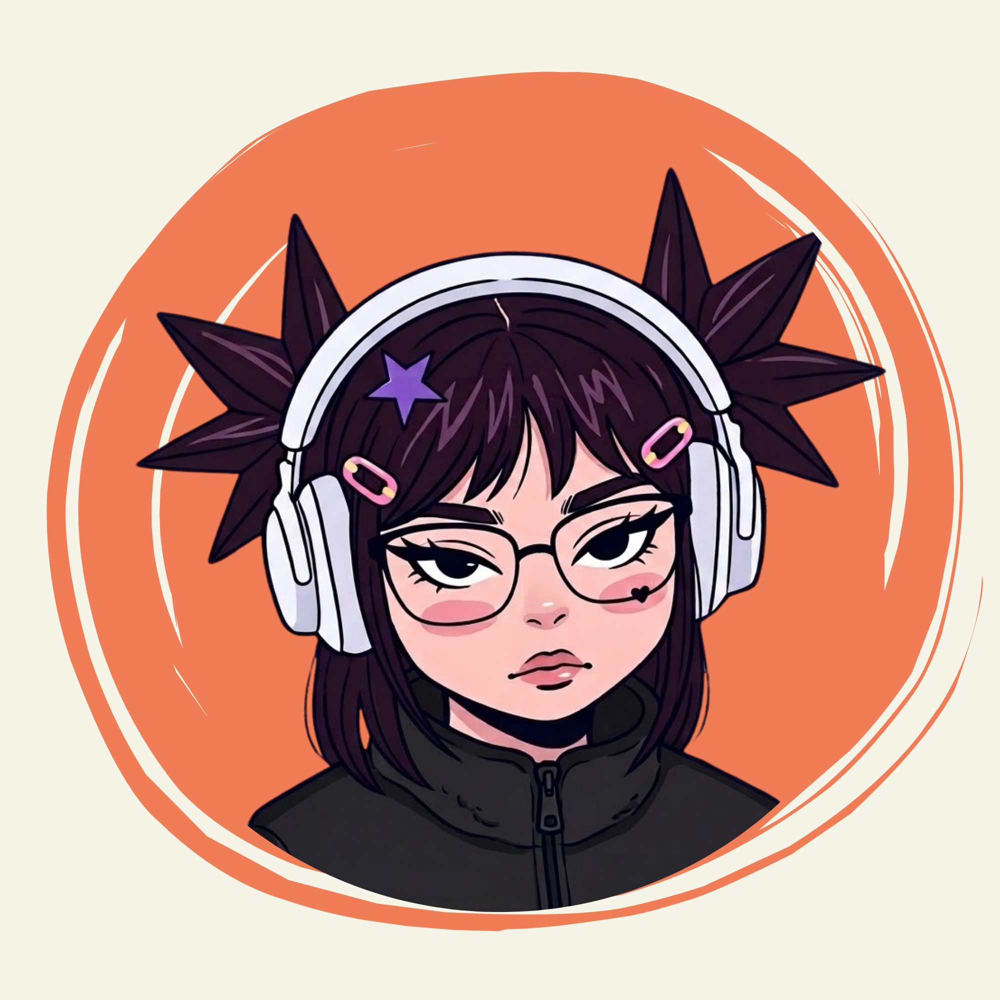

Sobre mí

Tengo 29 años y actualmente vivo en Bahía Blanca, Argentina. Estoy formándome en Diseño Gráfico Digital y construyendo mi camino dentro del mundo creativo.
Lo que me interesa
- Diseño gráfico y comunicación visual
- Branding e identidad de marca
- Diseño web y experiencias digitales
- Marketing y redes sociales
- Audiovisuales
- Explorar nuevas herramientas y tecnologías
Me interesa descubrir cosas nuevas, aprender constantemente y encontrar formas diferentes de convertir una idea en algo visual. Disfruto especialmente esos proyectos que me permiten experimentar, investigar y salir de lo convencional.